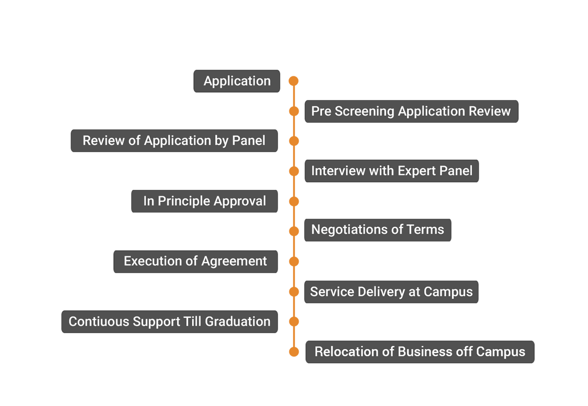

The process of Selection is detailed under Selection Process. Application may have the following details: Name of the Applicant, his address, Telephone, email id and complete educational background and experience details of all the promoters team. A brief idea about the technology and business, type of research or development assistance needed, availability of start-up capital, services expected from VIT-TBI and declaration that the details shared are not any trade or commercial secret.
A panel of eminent technocrats will process the applicants, interview the promoters and select the ventures for incubation after carefully evaluating the business idea, market availability, potential value of the technology, growth prospects, innovative content and promoter team. The panel will consist of experienced and qualified professionals from specific industry, leading bankers, seasoned venture capitalists and academicians of repute.
